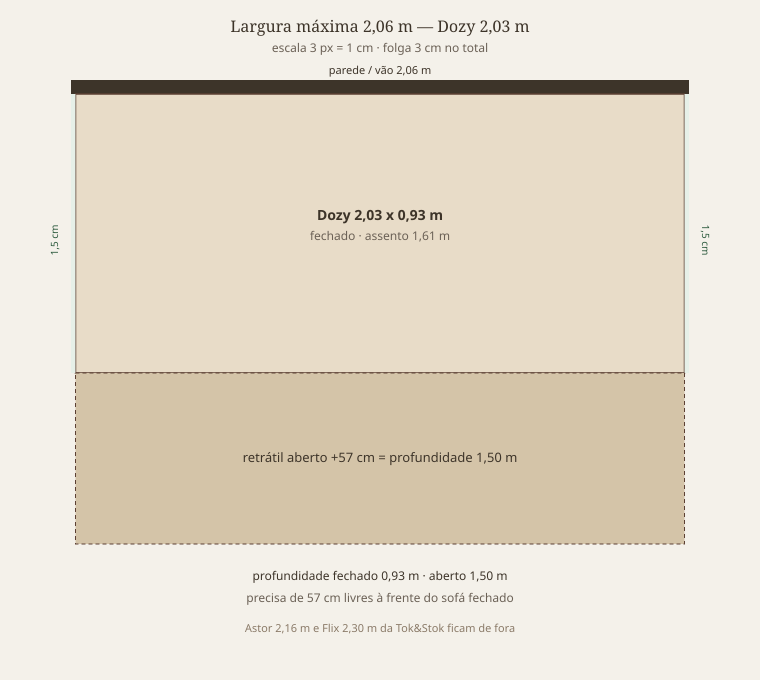
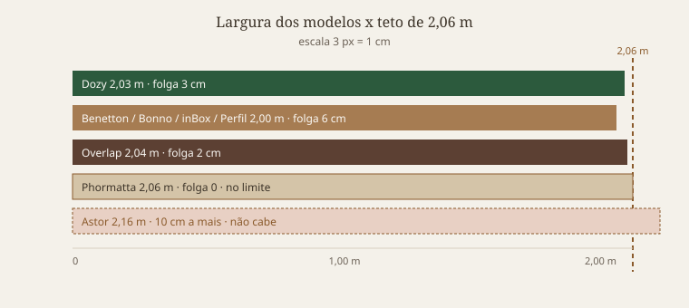

Recomendação.
Comprar o Dozy 3 lugares bege da Tok&Stok:
203 cm (folga 3 cm), retrátil e reclinável em 5 posições,
R$ 3.276,55 no Pix, em estoque em 3/9/2026.
É o único retrátil da Tok&Stok ≤ 2,06 m confirmado à venda agora.
Premissas
Largura de catálogo ≤ 206 cm. Modelos de 216 cm (Astor) e 230 cm (Flix) não entram.
206 cm no limite (Phormatta Evolution) fica de fora: zero folga e variação artesanal de alguns cm.
Retrátil = assento que puxa para a frente. Reclinável é extra (encosto). Os dois juntos são o uso típico de filme/série.
A profundidade aberta precisa de corredor livre à frente. O Dozy pede 1,50 m no total (mais ~57 cm além do sofá fechado).
Preços conferidos em 3/9/2026; frete e CEP alteram o valor final.

Dozy no vão de 2,06 m. Fechado 0,93 m; aberto 1,50 m.↑ Índice
Comparativo

Quem cabe e quem passa do teto de 2,06 m.
Desmarque as tags para filtrar. A grade e a tabela acompanham juntas.
Irmão mais barato do Benetton: Linoforte Fassatti 200 cm, ~R$ 1.315–1.499 (Ponto / Casas Bahia / Inter), D33, encosto removível para passar em porta estreita. Sem foto local.
Preço: R$ 3.449,00 · R$ 3.276,55 à vista no Pix · 10× R$ 344,90
Medidas: 203 × 95 × 93 cm (fechado) · aberto 203 × 90 × 150 cm
Folga no vão: 3 cm
Assento: frente 1,61 m · molas bonnel · D26/D20 · 200 kg no total
Encosto: reclinável em 5 posições · 2 almofadas fixas
Estrutura: eucalipto maciço · pés de madeira + rodízios de silicone
Tecido: 100% algodão (bege)
Deserto, Konkret e outras cores estavam indisponíveis. Tok&Stok sobe só até o 5º andar por escada; conferir elevador e portas. Precisa de 57 cm livres à frente para abrir o retrátil.
Preço: ~R$ 1.899 à vista (visto em 3/9/2026; Extra chegou a ~R$ 1.799)
Medidas: 200 cm de largura · assento sem braços 150 × 52 cm (fechado) / 92 cm (aberto) · braços ~25 cm cada
Folga no vão: 6 cm
Assento: retrátil · espuma D33 · 120 kg por lugar
Encosto: 6 posições de reclinagem · almofadas fixas
Tecido: suede · eucalipto · 4 rodízios
Melhor custo-benefício se a prioridade for preço e D33. Fassatti 200 cm é a versão mais barata da mesma casa (~R$ 1.315–1.499), com encosto removível para passar em porta.
Loja: Cama inBox · também Magalu / Casas Bahia / MadeiraMadeira
Preço: R$ 2.094,68 · R$ 1.969 no Pix no site da marca (vermelho). Casas Bahia chegou a listar ~R$ 1.399 em outra cor.
Medidas: 200 × 95 × 90 cm (fechado) · aberto 150 cm
Folga no vão: 6 cm
Assento: retrátil Open-All (abre unificado) · D33 · 110 kg por pessoa
Encosto: 5 estágios · almofadas removíveis (ajuda a passar em porta)
Logística: entra em porta a partir de 65 cm. Transportadora entrega na portaria — não sobe escada nem elevador.
Melhor opção se o gargalo for a porta, não a parede de 2,06 m. Produto artesanal: a marca admite variação de alguns centímetros — ainda assim 200 cm deixa 6 cm de folga.
Loja: Cama inBox · SKU 15160 (bege claro). ML catálogo MLBU4046789936
Preço: no site da marca R$ 1.913,83 · R$ 1.799 à vista no Pix (6% off) · 12× R$ 159,49. Preço no Mercado Livre não conferido — a página pediu login em 4/9/2026
Medidas: 190 cm de largura · fechado 60 cm de profundidade · aberto (cama) 180 cm · assento a 42 cm do chão. Altura total não consta. A ficha do bege também lista “medidas disponíveis 1,88 m”
Folga no vão: 16 cm (190 cm). Se a peça vier 188 cm, folga 18 cm
O que falha no filtro: não é retrátil. É sofá-cama: vira cama de casal; não puxa o assento para filme/série
Assento: até 3 lugares · espuma Xpand Tech D33 · 120 kg por pessoa · até 400 kg no total
Encosto: floco de espuma · barras laterais removíveis e porta-copos. Sem reclinagem em estágios
Logística: Xpand Tech — chega a vácuo na caixa, passa porta/elevador/escada. Entrega na portaria; o cliente sobe. Sem rodízio
A folga de 16 cm era a maior desta lista até o Petit (26 cm). O Pix da marca (R$ 1.799) fica abaixo do Slim e do Benetton. Aberto pede 1,20 m livres à frente (60 → 180 cm) — mais que o Dozy. Circuito 4/9/2026: Colombo e Shopee sem Orbe (têm o Nami 1,88 m, outro Xpand Tech); MadeiraMadeira e Madesa sem o modelo; Magalu bloqueou a busca (403); Leroy não devolveu resultado.
Tecido: petit bouclé · cinza escuro neste anúncio; também bege claro, caramelo, cinza claro e marrom. Faixa lateral em courino
Logística: enviado montado em 1 módulo. Entrega na portaria; transportadora não sobe escada nem elevador. Produto artesanal: a marca admite variação de alguns centímetros
Retrátil de verdade e ainda vira cama + baú. Aberto pede só 26 cm à frente (110 → 136 cm) — menos que o Dozy. Circuito 4/9/2026: Colombo tem o cinza escuro. MadeiraMadeira tem o 1,80 Petit (bege claro conferido). Mercado Livre listou o 1,80 a R$ 2.769; a ficha pediu login na 2ª tentativa. Magalu bloqueou a busca (403); a indexação cita o Petit 1,80 cinza claro. Shopee não devolveu o Petit (API 403; tem Lounge 1,95 m, outro modelo). Madesa não vende Cama inBox. Leroy bloqueou a busca (403) e não apareceu o Petit nos resultados indexados.
Faixa à venda agora: ~R$ 1.315 (Fassatti) a R$ 3.277 (Dozy Pix). Petit R$ 2.549 PIX no site da marca, 180 cm. Orbe R$ 1.799 PIX, mas não é retrátil. Fora: Astor 216 cm, Flix 230 cm.